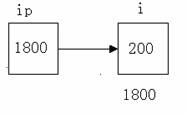
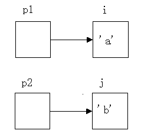
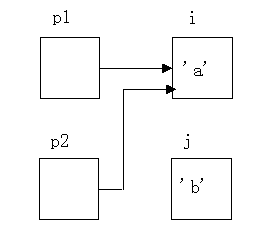
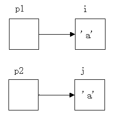

指针变量同普通变量一样，使用之前不仅要定义说明，而且必须赋予具体的值。未经赋值的指针变量不能使用，否则将造成系统混乱，甚至死机。指针变量的赋值只能赋予地址，决不能赋予任何其它数据，否则将引起错误。在Ｃ语言中，变量的地址是由编译系统分配的，对用户完全透明，用户不知道变量的具体地址。
两个有关的运算符：
1) &:取地址运算符。
2) *：指针运算符（或称“间接访问” 运算符）。
Ｃ语言中提供了地址运算符&来表示变量的地址。
其一般形式为：
&变量名；
如&a表示变量a的地址，&b表示变量b的地址。变量本身必须预先说明。
设有指向整型变量的指针变量p，如要把整型变量a 的地址赋予p可以有以下两种方式：
(1) 指针变量初始化的方法
int a; int *p=&a;
(2) 赋值语句的方法
int a; int *p; p=&a;
不允许把一个数赋予指针变量，故下面的赋值是错误的：
int *p; p=1000;
被赋值的指针变量前不能再加“*”说明符，如写为*p=&a 也是错误的。
假设:
int i=200, x; int *ip;
我们定义了两个整型变量i,x,还定义了一个指向整型数的指针变量ip。i,x中可存放整数,而ip中只能存放整型变量的地址。我们可以把i的地址赋给ip:
ip=&i;
此时指针变量ip指向整型变量i,假设变量i的地址为1800,这个赋值可形象理解为下图所示的联系。

以后我们便可以通过指针变量ip间接访问变量i,例如:
x=*ip;
运算符*访问以ip为地址的存贮区域,而ip中存放的是变量i的地址,因此,*ip访问的是地址为1800的存贮区域(因为是整数,实际上是从1800开始的两个字节),它就是i所占用的存贮区域, 所以上面的赋值表达式等价于
x=i;
另外,指针变量和一般变量一样,存放在它们之中的值是可以改变的,也就是说可以改变它们的指向,假设
int i,j,*p1,*p2; i='a'; j='b'; p1=&i; p2=&j;
则建立如下图所示的联系:

这时赋值表达式:
p2=p1
就使p2与p1指向同一对象i,此时*p2就等价于i,而不是j,图所示:

如果执行如下表达式:
*p2=*p1;
则表示把p1指向的内容赋给p2所指的区域, 此时就变成图所示

通过指针访问它所指向的一个变量是以间接访问的形式进行的,所以比直接访问一个变量要费时间,而且不直观,因为通过指针要访问哪一个变量,取决于指针的值(即指向),例如"*p2=*p1;"实际上就是"j=i;",前者不仅速度慢而且目的不明。但由于指针是变量,我们可以通过改变它们的指向,以间接访问不同的变量,这给程序员带来灵活性,也使程序代码编写得更为简洁和有效。
指针变量可出现在表达式中, 设
int x,y，*px=&x;
指针变量px指向整数x,则*px可出现在x能出现的任何地方。例如:
y=*px+5; /*表示把x的内容加5并赋给y*/ y=++*px; /*px的内容加上1之后赋给y，++*px相当于++(*px)*/ y=*px++; /*相当于y=*px; px++*/